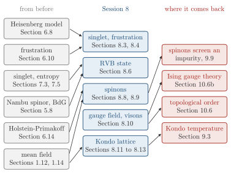

Advanced Quantum Materials 2027 · All lectures · Lecture notes
Session 8. Quantum Magnetism, Spinons and Kondo Physics
Video lecture · Landscape lecture · session8.ipynb · PDF of the notes
In this session we need four things from before. The first is the mean-field method of Section 1.12, which we used for the magnetism of the Hubbard model in Section 1.14 and again in Session 6. The second is the Heisenberg model (6.5) and its origin in the Hubbard dimer, Section 6.8. The third is the description of an ordered magnet with magnons, with the Holstein-Primakoff transformation of Section 6.14. The fourth is the frustration of Section 6.10, and in Session 7 the singlet (7.3) and the idea that a quantum spin liquid has no order parameter for mean field to find.
Session 6 studied only magnets that break time-reversal symmetry, which are ferromagnets and antiferromagnets. In this session we study quantum magnets, which do not break it. First, we will see minimal models of quantum magnetism, from the singlet of two spins to the resonating valence bond state of a frustrated lattice. Then we will see the excitations that quantum spin liquids (QSLs) have, which are spinons and gauge excitations. At the end we will study Kondo systems and Kondo lattice models, which are very different physical systems that we solve with the same method. The idea that connects the whole session is the one that we have used since Session 1. We take a many-body Hamiltonian that mean-field theory cannot treat, we write it with the right auxiliary particles, and we do mean-field theory on that problem.
In this session we use \(\hbar = 1\) for the spin operators, which is the convention of Session 6.

- In Section 9.9 the spinons of this session screen a magnetic impurity in a quantum magnet, with the same mathematics as Friedel oscillations in a metal.
- In Section 9.3 the Kondo effect is a case where linear response fails, since the Kondo temperature is not a power series in the coupling.
- In Section 10.6b a gauge theory with spins on the links comes back, where flipping the bonds at one vertex leaves every plaquette product the same.